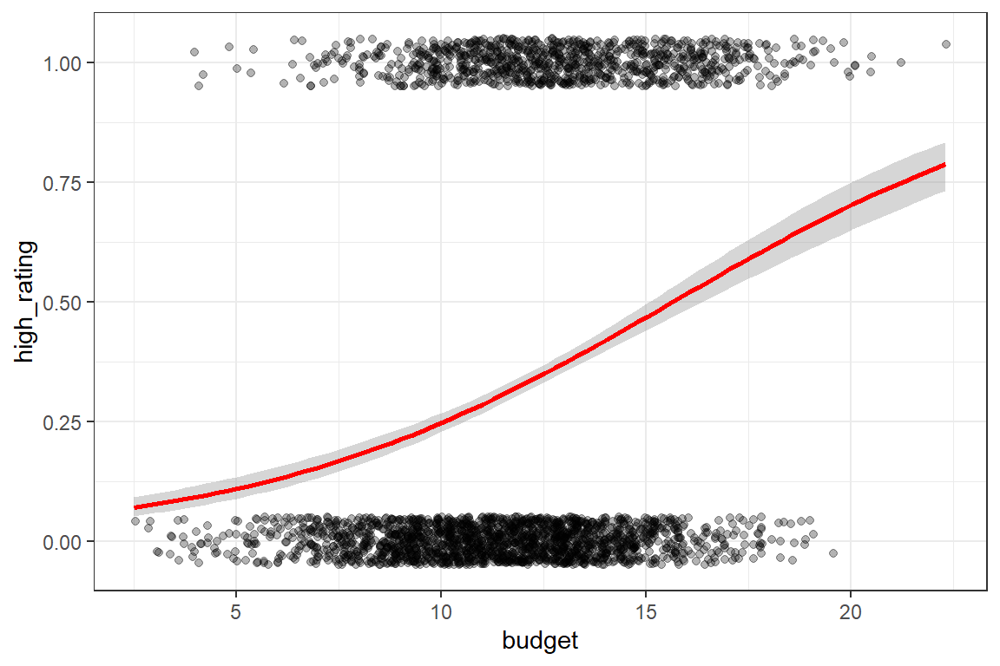
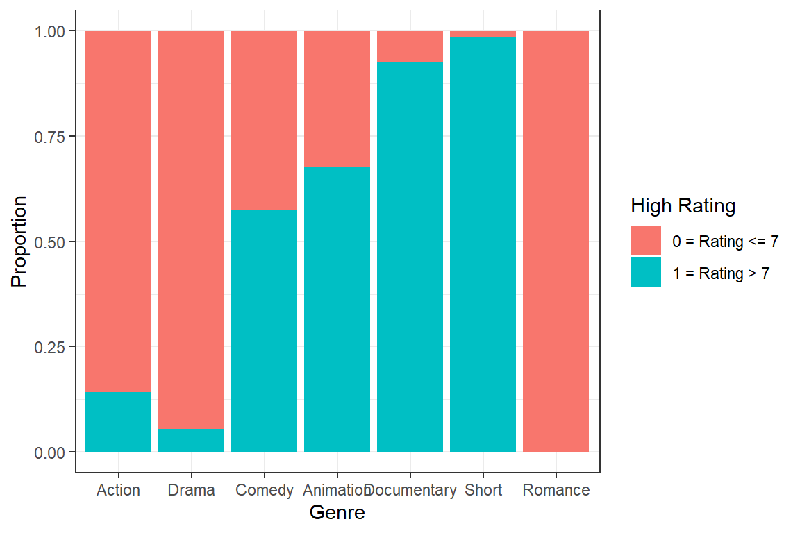

Which properties of films influence whether they are rated by IMDB as greater than 7 or not?
Code
# Load required packages for data analysis and visualisationlibrary(ggplot2) # Data visualisationlibrary(tidyverse) # Data manipulation and general workflow toolslibrary(gt) # Table formattinglibrary(broom) # Convert model outputs into tidy data frameslibrary(knitr) # Create formatted tables in the reportlibrary(dplyr) # Data manipulation functionslibrary(tibble) # Enhanced data frame tools
1 Introduction
This study investigates which film characteristics influence whether a film receives an IMDB rating greater than 7. IMDB ratings are widely used as an indicator of audience perception and overall film quality, as they are based on a large number of user evaluations.
Understanding which characteristics are associated with higher ratings may provide insights into what factors contribute to the perceived success of a film. In particular, features such as release year, film length, number of votes and genre may influence how audiences evaluate movies.
To investigate this question, a binary response variable is created to indicate whether a film has an IMDB rating above 7. A logistic regression model within the Generalised Linear Model framework is used to examine how film characteristics influence the probability of receiving a high rating.
2 Research Question
The aim of this analysis is to examine which film characteristics are associated with whether a film receives an IMDB rating greater than 7 or not.
To address this question, a binary response variable is considered, taking the value 1 if a film has an IMDB rating above 7 and 0 otherwise. The analysis focuses on whether release year, film length, production budget, number of votes, and genre are related to the probability of receiving a high rating.
Given that the response variable is binary, the analysis employs logistic regression as part of the Generalised Linear Model framework.
3 The Dataset
The dataset used in this analysis comes from the IMDB film database, which provides a large collection of information about films and their characteristics. The data analysed here represent a subset of this database containing key variables relevant to film popularity and ratings.
3.1 Inspect the dataset
Code
# Read the movie dataset from the CSV filemovies <-read.csv("dataset08.csv")
After loading the dataset, the first few observations are displayed to provide an initial overview of the data.
Code
# Display the first six rows to inspect the structure of the datasethead(movies)
The structure of the dataset is examined to identify the variables and their data types.
Code
# Examine the structure of the dataset# This shows variable types and basic information about each columnstr(movies)
Based on the structure output, the dataset contains 2,847 observations and seven variables. Specifically, film_id, year, length, and votes are stored as integer variables, while budget and rating are numeric variables. The genre variable is recorded as a character variable representing film categories. The structure output also suggests that some variables, such as length, contain missing values (NA).
To further explore the distribution of the variables in the dataset, summary statistics are computed.
Code
# Produce basic summary statistics for all variablessummary(movies)
Code
# Select numerical variables for descriptive statisticsnumeric_vars <- movies %>%select(film_id, year, length, budget, votes, rating)# Compute key descriptive statistics for each variablenumeric_stats <-rbind(summarise(numeric_vars, across(everything(), ~min(., na.rm =TRUE))), # Minimumsummarise(numeric_vars, across(everything(), ~quantile(., 0.25, na.rm =TRUE))), # 1st quartilesummarise(numeric_vars, across(everything(), ~median(., na.rm =TRUE))), # Mediansummarise(numeric_vars, across(everything(), ~mean(., na.rm =TRUE))), # Meansummarise(numeric_vars, across(everything(), ~quantile(., 0.75, na.rm =TRUE))), # 3rd quartilesummarise(numeric_vars, across(everything(), ~max(., na.rm =TRUE))), # Maximumsummarise(numeric_vars, across(everything(), ~sum(is.na(.)))) # Number of missing values) # Transpose the table to present variables as rowsnumeric_stats <- numeric_stats %>%t() %>%as.data.frame() %>%setNames(c("Min", "1st Qu", "Median", "Mean", "3rd Qu", "Max", "Missing")) %>%rownames_to_column("Variable") %>%mutate(across(-Variable, ~round(as.numeric(.), 2))) # Round results for readability# Display the formatted tablekable(numeric_stats)
Table 1: Summary statistics for numerical variables
Variable
Min
1st Qu
Median
Mean
3rd Qu
Max
Missing
film_id
19.0
14159.5
29447.0
29180.86
43982.0
58748.0
0
year
1898.0
1957.0
1982.0
1975.75
1997.0
2005.0
0
length
1.0
73.0
90.0
82.22
101.0
480.0
131
budget
2.5
9.9
11.9
11.85
13.7
22.3
0
votes
5.0
11.0
29.0
657.03
114.0
149494.0
0
rating
0.8
3.7
4.6
5.34
7.7
9.2
0
Table 1 presents the summary statistics for the numerical variables included in the analysis.
As shown in Table 1, the release year of the films spans from 1898 to 2005, suggesting that the dataset covers a long historical period. Film length ranges from 1 to 480 minutes. The production budget ranges between 2.5 and 22.3, while the number of votes shows particularly large variation, with a maximum value of 149,494. In contrast, film ratings appear to be relatively concentrated, with values ranging from 0.8 to 9.2. It is also noteworthy that the variable length contains 131 missing observations, whereas the remaining numerical variables do not exhibit missing values.
In addition to the numerical variables, the distribution of film genres is also examined.
Code
# Count the number of films in each genregenre_summary <- movies %>%count(genre, sort =TRUE)# Display the genre frequency tablekable(genre_summary, caption ="Number of films by genre")
Table 2: Distribution of films across genres
Number of films by genre
genre
n
Action
872
Drama
797
Comedy
684
Animation
178
Documentary
154
Short
131
Romance
31
Table 2 reports the number of films in each genre. Action, Drama, and Comedy account for the largest number of observations, whereas genres such as Animation, Documentary, Short, and Romance appear less frequently. This suggests that the dataset is dominated by a few major genres.
3.2 Variable descriptions
In this dataset, each film is represented by several variables describing its main characteristics. Table 3 shows the main variables used, including their data types and brief descriptions.
Code
# Create a data frame that summarises the main variables in the datasetvar_desc <-data.frame(Variable =c("film_id", "year", "length", "budget", "votes", "genre", "rating"),Type =c("Integer", "Integer", "Numeric", "Numeric", "Integer", "Character", "Numeric"),Description =c("The unique identifier for the film","Year of release of the film in cinemas","Duration (in minutes)","Budget for the films production (in $1000000s)","Number of positive votes received by viewers","Genre of the film","IMDB rating from 0-10" ))# Display the variable description tablekable(var_desc)
Table 3: Description of variables in the dataset
Variable
Type
Description
film_id
Integer
The unique identifier for the film
year
Integer
Year of release of the film in cinemas
length
Numeric
Duration (in minutes)
budget
Numeric
Budget for the films production (in $1000000s)
votes
Integer
Number of positive votes received by viewers
genre
Character
Genre of the film
rating
Numeric
IMDB rating from 0-10
Table 3 shows the variables included in the dataset.
The dataset contains both numerical and categorical variables describing different aspects of each film. These variables will later be used as predictors in the statistical model.
4 Exploratory Analysis
Before fitting the GLM, exploratory analysis was carried out to examine the relationships between the response variable and the candidate predictors. This helps to identify broad patterns in the data and provides preliminary support for variable selection in the modelling stage.
Code
# Create a binary response variable for the logistic regression# 1 = IMDB rating above 7# 0 = IMDB rating 7 or belowmovies$high_rating <-ifelse(movies$rating >7, 1, 0)
4.1 Release Year and High IMDB Ratings
Release year may influence how films are rated. To explore this, films were grouped by release decade and the proportion of highly rated films (IMDB rating > 7) was calculated for each group.
Very early decades contained only a small number of films, so films released before 1910 were excluded from this plot to provide a more stable comparison across release periods.
Code
# Create a dataset summarising high ratings by release decademovies_year <- movies %>%filter(year >=1910) %>%# Remove very early films with few observationsmutate(decade =floor(year/10)*10) %>%# Convert year into decade groupsgroup_by(decade) %>%summarise(proportion_high =mean(high_rating, na.rm =TRUE), # Proportion of high ratingscount =n() # Number of films in each decade )# Plot the proportion of high-rated films across decadesggplot(movies_year, aes(x = decade, y = proportion_high)) +geom_line(colour ="mediumpurple", linewidth =1.2) +geom_point(colour ="gold2", size =2.5) +geom_hline(yintercept =mean(movies$high_rating), # Overall proportion reference linelinetype ="dashed",colour ="coral",linewidth =0.8) +labs(x ="Decade",y ="Proportion of Films with Rating > 7" ) +theme_bw()
Figure 1: Proportion of Highly Rated Films by Release Decade
Figure 1 shows the proportion of highly rated films across release decades. The dashed horizontal line represents the overall proportion of films with ratings above 7 in the dataset.
The proportion of highly rated films appears to vary across decades. Earlier decades tend to show somewhat higher proportions, while films released between the 1950s and 1980s appear to have relatively lower proportions. However, some early decades contain relatively few films, so these proportions should be interpreted with caution.
4.2 Film Length and IMDB Ratings
Film length may influence audience perception of a movie. To explore this relationship, film length is treated as a continuous variable and the relationship between film length and the probability of receiving a high rating is visualised using a logistic smoothing curve.
Code
# Remove observations with missing film length valuesmovies_length <-subset(movies, !is.na(length))# Plot relationship between film length and probability of high ratingggplot(movies_length, aes(x = length, y = high_rating)) +geom_jitter(height =0.05, alpha =0.3, colour ="pink") +# Scatter points with jittergeom_smooth(method ="glm", # Logistic regression smoothingmethod.args =list(family ="binomial"),colour ="navy") +labs(x ="Film Length (minutes)",y ="Probability of High Rating" ) +theme_bw()
Figure 2: Relationship Between Film Length and the Probability of High IMDB Ratings
Figure 2 shows the relationship between film length and the probability of receiving a high IMDB rating.
The probability of receiving a rating above 7 appears to be higher for shorter films and gradually decreases as film length increases. This suggests that film length may be associated with high ratings, although the pattern may partly reflect differences in genre composition across films of different lengths.
4.3 Production budget and IMDB Ratings
Film budget may also influence how audiences perceive a movie. To explore this possibility, the distribution of film budgets and their relationship with IMDB ratings were examined.
Code
# Plot relationship between film budget and probability of high ratingggplot(movies,aes(x = budget,y = high_rating)) +geom_jitter(height =0.05, alpha =0.3) +# Scatter pointsgeom_smooth(method ="glm", # Logistic smoothing curvemethod.args =list(family="binomial"),colour ="red" ) +theme_bw()

Figure 3: Relationship between film budget and the probability of receiving a high IMDB rating
Figure 3 shows the relationship between film production budget and the probability of receiving a high IMDB rating. Each point represents an individual film, and the red curve corresponds to the fitted logistic regression line.
The fitted curve shows a gradual upward trend, suggesting that films with larger budgets may be somewhat more likely to receive high ratings. This suggests that budget may be positively associated with the likelihood of a film receiving a high rating.
4.4 Votes and High IMDB Ratings
The number of votes may reflect a film’s popularity or level of audience engagement. Since the distribution of votes is highly skewed, with some films receiving far more votes than others, direct comparisons using raw vote counts are difficult. Therefore, films were divided into five groups based on vote quantiles so that each group contains approximately the same number of observations. This grouping allows the proportion of highly rated films to be compared across different levels of audience engagement while reducing the influence of extreme vote counts.
The approximate vote ranges for the five groups are:
Very Low: 5-10 votes
Low: 10-20 votes
Medium: 20-47 votes
High: 47-174 votes
Very High: above 174 votes.
Code
# Divide vote counts into five groups using quantilesvote_breaks <-quantile(movies$votes, probs =seq(0,1,0.2), na.rm =TRUE)# Create a categorical variable representing vote groupsmovies$vote_group <-cut( movies$votes,breaks = vote_breaks,include.lowest =TRUE,labels =c("Very Low", "Low", "Medium", "High", "Very High"))# Calculate proportion of high ratings in each vote groupprop_table <-aggregate(high_rating ~ vote_group,data = movies,FUN = mean)# Plot proportion of high ratings by vote groupggplot(prop_table, aes(x = vote_group, y = high_rating)) +geom_bar(stat ="identity", fill ="skyblue") +geom_hline(yintercept =mean(movies$high_rating), # Overall proportioncolour ="red",linetype ="dashed",linewidth =1) +labs(x ="Vote Groups",y ="Proportion of Films with Rating > 7" ) +theme_minimal()
Figure 4: Proportion of High IMDB Ratings Across Vote Groups
Figure 4 shows the proportion of highly rated films across vote groups. The dashed horizontal line represents the overall proportion of films with ratings above 7 in the dataset.
The proportion of highly rated films appears to vary across vote groups, with lower-vote groups showing slightly higher proportions than higher-vote groups. Although the pattern is not especially strong, it suggests that the relationship between vote count and high ratings may not be straightforward.
4.5 Film Genre and High IMDB Ratings
Film genre may influence how movies are perceived by audiences. Different genres may attract different audiences and may vary in storytelling style, which could affect IMDB ratings.
Code
# Calculate proportion of highly rated films for each genregenre_prop <- movies %>%group_by(genre) %>%summarise(proportion_high =mean(high_rating, na.rm =TRUE),count =n() )# Plot high rating proportion by genreggplot(genre_prop,aes(x =reorder(genre, proportion_high),y = proportion_high)) +geom_col(fill ="seagreen") +geom_hline(yintercept =mean(movies$high_rating, na.rm =TRUE), # Overall proportioncolour ="darkred",linetype ="dashed",linewidth =1) +coord_flip() +labs(x ="Genre",y ="Proportion of Films with Rating > 7" ) +theme_bw()
Figure 5: Proportion of Highly Rated Films by Genre
Figure 5 shows substantial variation in the proportion of highly rated films across genres. Some genres have much higher proportions of films with ratings above 7 than others.
This suggests that genre may be an important predictor of high ratings. However, some genres contain relatively few observations, so the corresponding proportions may be less stable and should be interpreted cautiously.
5 Model Fitting
5.1 Data Preprocessing
Before fitting the logistic regression models, a modelling dataset was created by selecting the variables required for the analysis and removing observations with missing values. In this analysis, the response variable is high_rating, while the candidate predictors are release year, film length, production budget, number of votes, and genre.
Code
# Create modelling dataset by selecting relevant variablesmovies_model <- movies %>%select(high_rating, year, length, budget, votes, genre) %>%na.omit() # Remove rows with any missing values# Convert genre into a categorical variablemovies_model$genre <-factor(movies_model$genre)
The raw distribution of film genres was previously presented in Table 2, and the proportion of highly rated films across genres was illustrated in Figure 5. However, the logistic regression model uses the complete dataset after removing rows with missing values. Therefore, the reference category for genre should be chosen based on the final modelling sample rather than the raw dataset.
To assess which genre is most suitable as the reference category, the distribution of the binary outcome variable (high_rating) across genres is examined in the modelling dataset.
Code
# Summarise the outcome distribution for each genre in the modelling datasetgenre_outcome_model <- movies_model %>%group_by(genre) %>%summarise(n =n(), # n = total number of films in the genre high_rating_0 =sum(high_rating ==0), # high_rating_0 = number of films with rating <= 7high_rating_1 =sum(high_rating ==1), # high_rating_1 = number of films with rating > 7prop_high =mean(high_rating) # prop_high = proportion of films with rating > 7 ) %>%arrange(desc(n))# Display the summary tablekable(genre_outcome_model, digits =3)
Table 4: Distribution of high ratings across genres in the modelling dataset
genre
n
high_rating_0
high_rating_1
prop_high
Action
826
709
117
0.142
Drama
761
719
42
0.055
Comedy
647
276
371
0.573
Animation
174
56
118
0.678
Documentary
149
11
138
0.926
Short
131
2
129
0.985
Romance
28
28
0
0.000
Table 4 shows that the genre categories differ significantly in both sample size and outcome distribution. Action has the largest number of observations in the modelling dataset, which makes it a stable category for comparison. In addition, Action contains both low-rated and high-rated films, rather than being concentrated almost entirely in one outcome group.
Some genres exhibit much more extreme outcome distributions. For example, Romance contains no films with ratings above 7, while Short and Documentary are heavily concentrated in the high-rating group. Among the remaining genres, Drama is strongly skewed towards low-rated films, whereas Comedy and Animation are relatively more concentrated in higher ratings. Compared with these categories, Action represents a more moderate and less extreme distribution.
To visualise these differences more clearly, Figure 6 shows the proportion of low-rated and high-rated films within each genre.
Code
# Create a proportional bar chart to show the composition of high_rating within each genreggplot(movies_model, aes(x =reorder(genre, -table(genre)[genre]), fill =factor(high_rating))) +geom_bar(position ="fill") +# Show proportions instead of countslabs(x ="Genre",y ="Proportion",fill ="High Rating" ) +scale_fill_discrete(labels =c("0 = Rating <= 7", "1 = Rating > 7") ) +theme_bw()

Figure 6: Proportion of low-rated and high-rated films within each genre in the modelling dataset
For these reasons, Action was selected as the reference category for genre. This choice is supported by three aspects: it remains the largest genre in the modelling dataset, it provides a relatively stable baseline, and it allows for meaningful comparisons across genres.
Code
# Set Action as the reference category for genremovies_model$genre <-relevel(movies_model$genre, ref ="Action")
After preprocessing, the modelling dataset is ready for logistic regression analysis, with genre coded as a categorical variable and Action defined as the baseline category for comparison.
5.2 Fitting Full Model
After data preprocessing, a full logistic regression model was fitted to investigate how film characteristics are associated with the probability of receiving a high IMDB rating.
In this analysis, the response variable is binary. Let \(Y_i\) be the binary response for film \(i\), where \(Y_i = 1\) if the film has an IMDB rating above 7 and \(Y_i = 0\) otherwise. Let \(p_i = P(Y_i = 1)\) denote the probability that film \(i\) receives a high IMDB rating. Since the response variable is binary, logistic regression with a logit link is used.
\(\beta_0\) is the intercept term for the reference genre;
\(\beta_1\) is the coefficient for release year;
\(\beta_2\) is the coefficient for film length;
\(\beta_3\) is the coefficient for production budget;
\(\beta_4\) is the coefficient for the number of votes;
\(\text{genre effect}_i\) represents the set of genre indicator terms, with each genre coefficient interpreted relative to the reference genre;
\(p_i\) is the probability that film \(i\) receives a high IMDB rating;
\(\text{logit}(p_i)=\log\left(\frac{p_i}{1-p_i}\right)\) is the logit transformation, that is, the logarithm of the odds.
The logit transformation is appropriate because the response variable is binary. Rather than modelling the probability directly, logistic regression models the log-odds of receiving a high rating as a linear combination of the predictors. A positive regression coefficient indicates that the corresponding predictor increases the log-odds, and hence the probability, of a film receiving a high rating, while a negative coefficient indicates the opposite.
Code
# Fit the full logistic regression modelmodel_full <-glm( high_rating ~ year + length + budget + votes + genre,data = movies_model,family = binomial)# Display model results in a formatted tabletidy(model_full) %>%kable(digits =3,col.names =c("Variable", "Estimate", "Std Error", "z value", "p value"),caption ="Logistic regression results (full model)" )
Table 5: Logistic regression results (full model)
Variable
Estimate
Std Error
z value
p value
(Intercept)
-23.616
5.789
-4.079
0.000
year
0.010
0.003
3.429
0.001
length
-0.057
0.004
-16.003
0.000
budget
0.510
0.030
16.935
0.000
votes
0.000
0.000
0.508
0.612
genreAnimation
-0.089
0.321
-0.277
0.782
genreComedy
3.109
0.179
17.351
0.000
genreDocumentary
5.608
0.443
12.661
0.000
genreDrama
-1.557
0.239
-6.506
0.000
genreRomance
-14.604
391.708
-0.037
0.970
genreShort
4.002
0.797
5.021
0.000
The coefficient estimates for the full model are presented in Table 5. Statistical significance is assessed at the 5% level throughout the analysis, so predictors with p-values below 0.05 are regarded as statistically significant. The results show that votes is not statistically significant, suggesting that it does not provide strong evidence of an independent contribution once the other variables are included in the model.
Compared with this, year, length, budget, and several genre categories show statistically significant associations with the odds of receiving a high rating. Overall, the full model suggests that more recent films and films with larger production budgets tend to have higher odds of receiving an IMDB rating above 7, while longer films tend to have lower odds. In addition, the estimated genre effects indicate that the probability of receiving a high rating differs across film genres. These findings provide the basis for considering a simpler model that excludes the non-significant predictor votes.
5.3 Fitting Reduced Model
Since votes was not statistically significant in the full model, a reduced logistic regression model was fitted after removing this variable. The purpose of removing this variable is to examine whether the model can be improved after excluding votes.
The coefficient estimates for the reduced model are presented in Table 6. The results show that, after removing votes, the main predictors in the model remain statistically significant at the 5% level. In particular, year and budget still have positive estimated effects, while length still has a negative estimated effect.
The genre coefficients also continue to show differences between genres in their association with high IMDB ratings. Compared with the full model, the overall pattern of results remains stable after excluding votes. This suggests that votes contributes little to the model, and that the reduced model is still able to capture the main relationships between film characteristics and the probability of receiving a high rating.
5.4 Model comparison
5.4.1 Coefficient Comparison Table
To compare the full and reduced models, the estimated coefficients are presented side by side in Table 7.
Code
# Extract coefficients from full modelfull_coef <-tidy(model_full) %>%select(term, estimate) %>%rename(Full_Model = estimate)# Extract coefficients from reduced modelreduced_coef <-tidy(model_reduced) %>%select(term, estimate) %>%rename(Reduced_Model = estimate)# Combine results into a comparison tablecomparison <- full_coef %>%full_join(reduced_coef, by ="term")# Display comparison tablekable( comparison,digits =3,col.names =c("Predictor", "Full Model", "Reduced Model"),caption ="Comparison of coefficients between full and reduced models")
Table 7: Comparison of coefficients between full and reduced models
Predictor
Full Model
Reduced Model
(Intercept)
-23.616
-23.864
year
0.010
0.010
length
-0.057
-0.057
budget
0.510
0.510
votes
0.000
NA
genreAnimation
-0.089
-0.079
genreComedy
3.109
3.111
genreDocumentary
5.608
5.605
genreDrama
-1.557
-1.557
genreRomance
-14.604
-14.608
genreShort
4.002
4.006
As shown in Table 7, removing the non-significant variable votes leads to only negligible changes in the estimated coefficients of the remaining predictors. In particular, the coefficients for release year, film length, production budget, and the genre categories remain very similar in magnitude and direction across the two models. This indicates that excluding votes has little impact on the estimated relationships between the other predictors and the probability of receiving a high IMDB rating.
5.4.2 Model Fitting Statistics Table
Code
# Create a summary table of model fit statistics# AIC is used to compare model fit while accounting for model complexity# Residual deviance and residual degrees of freedom are also reportedmodel_fit <-tibble(Model =c("Full model", "Reduced model"),AIC =c(AIC(model_full), AIC(model_reduced)),Residual_Deviance =c(deviance(model_full), deviance(model_reduced)),DF =c(df.residual(model_full), df.residual(model_reduced)))# Display the model fit statistics tablekable( model_fit,digits =3,caption ="Model fit statistics for the full and reduced models")
Table 8: Model fit statistics for the full and reduced models
Model
AIC
Residual_Deviance
DF
Full model
1478.365
1456.365
2705
Reduced model
1476.593
1456.593
2706
The model fitting statistics for the full and reduced models are presented in Table 8. The reduced model has a slightly lower AIC than the full model, which indicates a better balance between model fit and model complexity. Although the residual deviance of the reduced model is marginally higher than that of the full model, the difference is negligible. This indicates that removing the variable votes leads to almost no loss of explanatory power while producing a simpler model.
5.5 Final Model Selection
In the full model, the coefficient for the number of votes was not statistically significant. After removing this variable, the reduced model produced a slightly lower AIC and almost the same residual deviance as the full model. In addition, the comparison of coefficients between the two models showed that the estimated effects of the remaining predictors changed very little after excluding votes. Therefore, the reduced model was selected as the final model because it achieves a slight improvement in overall model performance while maintaining a very similar level of fit, and provides a more parsimonious representation of the data.
Table 9: Odds ratios for the reduced logistic regression model
Predictor
OR
SE
z
p
CI low
CI high
(Intercept)
0.000
5.767
-4.138
0.000
0.000
0.000
year
1.010
0.003
3.483
0.000
1.005
1.016
length
0.945
0.004
-16.077
0.000
0.938
0.951
budget
1.665
0.030
16.933
0.000
1.572
1.769
genreAnimation
0.924
0.320
-0.246
0.806
0.491
1.725
genreComedy
22.439
0.179
17.362
0.000
15.905
32.119
genreDocumentary
271.756
0.442
12.673
0.000
119.805
683.371
genreDrama
0.211
0.239
-6.509
0.000
0.130
0.333
genreRomance
0.000
391.829
-0.037
0.970
0.000
207.390
genreShort
54.903
0.797
5.028
0.000
14.173
370.971
Table 9 presents the odds ratios from the final logistic regression model. The odds ratios are obtained by exponentiating the estimated coefficients and provide an interpretable measure of how each predictor affects the odds that a film receives an IMDB rating above 7, holding the other variables constant.
5.7 Predicted Probabilities
To further illustrate the final logistic regression model, predicted probabilities were calculated using the reduced model. Film length was allowed to vary across its observed range, while release year and production budget were held constant at their mean values.
Predicted probabilities were generated for several selected genres in order to visualise how the probability of receiving an IMDB rating above 7 changes with film length and genre.
For classification purposes, a default cutoff value of 0.5 was also specified in the prediction code. This means that a film would be classified as predicted high rating if its predicted probability is greater than 0.5, and as not high rating otherwise.
Code
# Create new dataset for predictionnewdata <-expand.grid(length =seq(min(movies_model$length, na.rm =TRUE),max(movies_model$length, na.rm =TRUE),length.out =100 ),year =mean(movies_model$year, na.rm =TRUE), # Fix year at mean valuebudget =mean(movies_model$budget, na.rm =TRUE), # Fix budget at mean valuegenre =c("Action", "Comedy", "Documentary", "Drama", "Short") # Selected genres)# Generate predicted probabilities from the reduced modelnewdata$pred_prob <-predict( model_reduced,newdata = newdata,type ="response")# Set classification rulecutoff <-0.5newdata$pred_class <-ifelse(newdata$pred_prob > cutoff, 1, 0)# Plot predicted probabilitiesggplot(newdata, aes(x = length, y = pred_prob, colour = genre)) +geom_line(linewidth =1.2) +labs(x ="Film Length (minutes)",y ="Predicted Probability",colour ="Genre" ) +theme_bw()
Figure 7: Predicted Probability of High IMDB Rating by Film Length and Genre
Figure 7 shows the predicted probability that a film receives an IMDB rating above 7 across different film lengths for several selected genres.
The predicted probabilities decrease as film length increases, indicating that longer films are generally less likely to receive ratings above 7 according to the fitted model. This pattern is consistent with the negative coefficient of film length observed in the logistic regression results.
Differences between genres can be clearly seen. Documentary films consistently have the highest probability of receiving a rating above 7 across most film lengths, with Short films also showing relatively high probabilities. Comedy films show moderate probabilities, followed by Action films. Meanwhile, Drama films have the lowest probability of receiving a rating above 7 across the range of film lengths considered.
Overall, the figure illustrates how the final logistic regression model combines the effects of film length and genre to predict the probability that a film achieves an IMDB rating above 7, while holding the other predictors constant.
6 Model Limitation
This analysis has several limitations that should be taken into account when interpreting the results.
First, the dataset contains only a limited number of film characteristics, including release year, film length, production budget, number of votes, and genre. Other potentially important factors, such as director, cast, country of production, awards, marketing exposure, or distribution platform, are not included. As a result, the fitted model may omit variables that also influence whether a film receives an IMDB rating above 7.
Second, missing values in film length were handled by removing incomplete observations before model fitting. Although this produces a simple and consistent modelling dataset, it reduces the sample size and may introduce bias if the missing values are not completely random.
Third, some genres contain relatively small numbers of films compared with the larger categories. This may lead to less stable coefficient estimates for those smaller groups, so the corresponding genre effects should be interpreted with caution.
Finally, the analysis is based on a binary transformation of the original IMDB rating. While this makes logistic regression suitable and allows a clear distinction between high-rated and non-high-rated films, it also simplifies the original rating scale and may lose some information contained in the full range of ratings.
7 Future Work
There are several ways in which this analysis could be extended in future work.
First, more explanatory variables could be added to the model. Including information such as director, actors, awards, country of production, or distribution platform may provide a more complete understanding of the factors associated with high IMDB ratings.
Second, alternative approaches to handling missing data could be considered. Instead of removing incomplete observations, future analysis could explore imputation methods and compare whether the results remain consistent.
Third, the current analysis focuses on main effects only. Future work could investigate whether interaction effects are present. For example, the relationship between film length and rating may differ across genres, or the effect of budget may vary across release periods.
8 Conclusion
This analysis examined which film characteristics are associated with whether a film receives an IMDB rating greater than 7. To answer this question, a binary response variable was created to distinguish films with ratings above 7 from those with ratings of 7 or below, and logistic regression was used to model the probability of receiving a high rating.
A full model including release year, film length, production budget, number of votes, and genre was first fitted. Since the number of votes was not statistically significant, a reduced model excluding this variable was selected as the final model. The reduced model achieved a slightly lower AIC than the full model, while the estimated effects of the remaining predictors stayed broadly similar. This suggests that removing votes improved the model slightly.
Overall, the final model indicates that release year, film length, production budget, and genre are important predictors of whether a film receives an IMDB rating above 7. In particular, more recent films and films with larger production budgets tend to have higher odds of receiving a high rating, while longer films tend to have lower odds. Differences across genres were also evident, indicating that genre plays an important role in the probability of a film being highly rated.
In summary, these findings show that logistic regression provides a useful and interpretable framework for examining how film characteristics are associated with high IMDB ratings. Although the model does not capture every factor that may influence audience evaluation, it provides a clear statistical summary of the main relationships in this dataset.